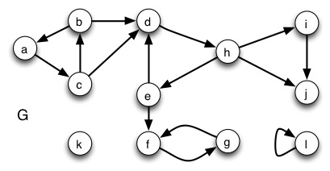
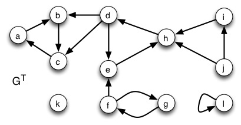

1. Run DFS on this graph. To make grading easier, visit vertices in alphabetical order (both in the main loop of DFS and the adjacency list loop of DFS-Visit). For each vertex, show values d (discovery), f (finish), and π (parent).

The finish times from largest to smallest order the nodes in a manner consistent with a topological sort of their SCCs.
2. Now run DFS on the transpose graph, visiting vertices in order of finish time (highest to lowest) from the DFS of step 1 (as required by the SCC algorithm). Again, show values d (discovery), f (finish), and π (parent).

3. List the strongly connected components you found by first listing the tree edges in the transpose graph that define the SCC, and then listing the vertices in the SCC (the first is shown):
SCC 1: Tree edges: { }; Vertices: {l}
SCC 2: Tree edges: {...}; Vertices: {...}
SCC 3: ...